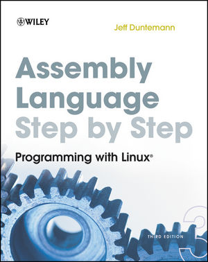
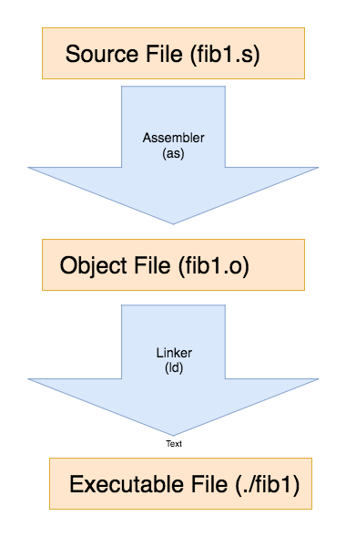
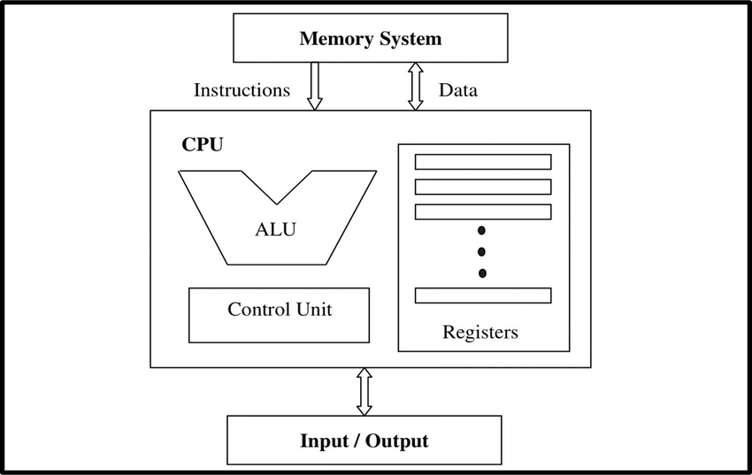
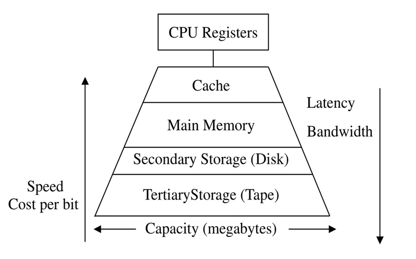
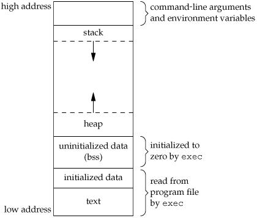
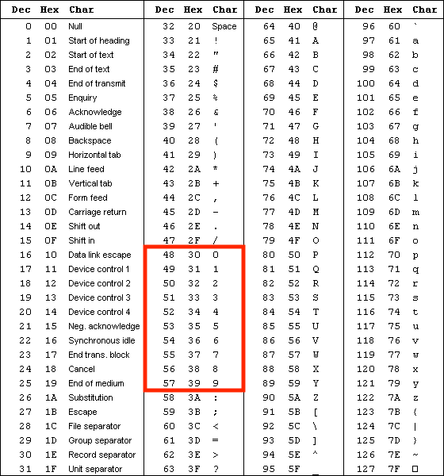
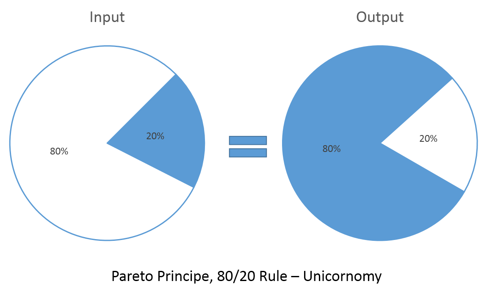

Creating a Fibonacci Generator in Assembly
Because ¯\_(ツ)_/¯
By Will van Ketwich
@wilvk
Just a dude that does stuff... mostly with computers.
Systems Engineer at REA Group Group Delivery Engineering, Group Technology
Assembly

Why???
Seriously dude, why Assembly?
|
|
How?
How to get started?
|
|
 |
A Small Project
- Reading input from the command line
- Get length of command line argument
- Converting input to a number
- Generating the Fibonacci number
- Printing the output to screen
$ ./fib7 46
2971215073
Decisions to be made
The Fibonacci Sequence

The Fibonacci Algorithm
From Wikipedia:
The sequence Fn of Fibonacci numbers is defined by the recurrence relation:
Fn=Fn-1 + Fn-2
with seed values:
F1=1, F2=1
or:
F0=0, F1=1
A resultant sequence
| Value | 0 | 1 | 1 | 2 | 3 | 5 | 8 | 13 | 21 | 34 | 55 | ... |
| Position | - | - | 1 | 2 | 3 | 4 | 5 | 6 | 7 | 8 | 9 | ... |
The Fibonacci Algorithm
As C code
int fib(int n)
{
int f[n+2];
int i;
f[0] = 0;
f[1] = 1;
for (i = 2; i <= n; i++)
{
f[i] = f[i-1] + f[i-2];
}
return f[n];
}
int fib(int n)
{
int f[n+2];
int i;
f[0] = 0;
f[1] = 1;
for (i = 2; i <= n; i++)
{
f[i] = f[i-1] + f[i-2];
}
return f[n];
}
Beginning our implementation
And some starting knowledge
GAS Files and Language Syntax
fib1.s - doing nothing takes something
.section .text
.globl _start
_start:
nop
# the rest of our program goes here
movl $1, %eax
movl $0, %ebx
int $0x80
The building blocks
Opcodes and Operands
| Line | Opcode | Operand 1 | Operand 2 | Description |
|---|---|---|---|---|
| nop | nop | - | - | no-operation |
| movl $1, %eax | movl | $1 | %eax | copy 1 into register eax |
| movl $0, %ebx | movl | $0 | %ebx | copy 0 into register ebx |
| int $0x80 | int | $0x80 | - | call interrupt number 0x80 |
The tools of the trade
Assemblers and Linkers
|  |
|
The tools of the trade
Object file utilities
The canvas
CPU and Registers
The canvas
Memory Hierarchy
The canvas
Registers

NOP
nop
MOV
mov (%ebx), %eax # copy address pointed to by ebx to register eax
mov %ebx, (%eax) # copy value in ebx to address pointed to by eax
mov $1, %eax # place value 1 into register eax
mov $5, (%eax) # place value 5 into address pointed to by eax
mov %ebp, %esp # copy value in register ebp into register esp
MOV - Operation Suffixes
| Suffix | Type | Bits (Integer) | Bits (Floating Point) |
|---|---|---|---|
| b | byte | 8 | - |
| s | short | 16 | 32 |
| w | word | 16 | - |
| l | long | 32 | 64 |
| q | quad | 64 | - |
| t | ten bytes | - | 80 |
movb $2, (%ebx) # moves 0x02 into ebx
movw $2, (%ebx) # moves 0x0002 into ebx
movl $2, (%ebx) # moves 0x00000002 into ebx
INT
- Linux uses INT 0x80
- MacOS uses INT 0x60
- Windows uses INT 0x21
# exit with return code 0
movl $1, %eax
movl $0, %ebx
int 0x80
1. Reading input from thecommand line
- Reading input from the command line
- Get length of command line argument
- Converting input to a number
- Generating the Fibonacci number
- Printing the output to screen
Memory Layout
Command Line Arguments in the Stack
| Stack | Data |
|---|---|
| ... | |
| ESP + n+8 | < pointer to second environment variable > |
| ESP + n+4 | < pointer to first environment variable > |
| ESP + n | < NULL for end of command line arguments > |
| ESP + n-4 | < pointer to last string argument > |
| ... | |
| ESP + 12 | < pointer to second string argument > |
| ESP + 8 | < pointer to a string that contains the first argument > |
| ESP + 4 | < pointer to a string containing the name of the application > |
| ESP + 0 | < number of arguments on command line > |
| ... |
A Simple Print Utility
fib2.s
# stack args example
.section .text
.globl _start
_start:
nop
movl %esp, %ebp # take a copy of the stack pointer esp into ebp
addl $8, %ebp # address of first arg in stack
movl (%ebp), %ecx # move the address of the first arg into ecx
movl $4, %edx # set the length of our string to 4
movl $4, %eax # indicate to int 0x80 that we are doing a write
movl $0, %ebx # indicate to int 0x80 that we are writing to file descriptor 0
int $0x80 # call int 0x80 for write
movl $1, %eax # exit gracefully
movl $0, %ebx # with return code 0
int $0x80 # call int 0x80 for exit
Viewing the Stack in GDB
A demo
2. Get length of command line argument
- Reading input from the command line
- Get length of command line argument
- Converting input to a number
- Generating the Fibonacci number
- Printing the output to screen
Approach
Source
fib3.s
# framework - get first argument from the command line and print to stdout
.section .text
.globl _start
_start:
nop
movl %esp, %ebp # take a copy of esp to use
addl $8, %ebp # address of first arg in stack
movl (%ebp), %edi # move arg address into esi for scasb
push %edi # store the string address as edi gets clobbered
movl $50, %ecx # set ecx counter to a high value
movl $0, %eax # zero al search char
movl %ecx, %ebx # copy our max counter value to edx
cld # set direction down
repne scasb # iterate until we find the al char
subl %ecx, %ebx # subtract from our original ecx value
dec %ebx # remove null byte at the end of the string from the count
pop %ecx # restore our string address into ecx
mov %ebx, %edx # move our count value to edx for the int 80 call
movl $4, %eax # set eax to 4 for int 80 to write to file
movl $0, %ebx # set ebx for file to write to as stdoout (file descriptor 0)
int $0x80 # make it so
movl $1, %eax # set eax for int 80 for system exit
movl $0, %ebx # set ebx for return code 0
int $0x80 # make it so again
Source
New Code
movl (%ebp), %edi # move arg address into esi for scasb
push %edi # store the string address as edi gets clobbered
movl $50, %ecx # set ecx counter to a high value
movl $0, %eax # zero al search char
movl %ecx, %ebx # copy our max counter value to edx
cld # set direction down
repne scasb # iterate until we find the al char
subl %ecx, %ebx # subtract from our original ecx value
dec %ebx # remove null byte at the end of the string from the count
pop %ecx # restore our string address into ecx
mov %ebx, %edx # move our count value to edx for the int 80 call
repne scasb
Scanning Strings
Some Arithmetic
| ecx = 50 - ( len(string) + 1 ) |
| but we want len(string) |
| len(string) + 1 = 50 - ecx |
| len(string) = (50 - ecx) - 1 |
subl %ecx, %ebx # subtract from our original ecx value
dec %ebx # remove null byte at the end of the string from the count
Labels, CALL, RET and the Stack
labels
my_function:.my_local_function:Labels, CALL, RET and the Stack
CALL and RET
CALL:
places next instruction address on the stack
jumps execution to address of label
RET:
RET jumps execution back to the next address on the stack
functions are just a logical placing of CALL and RET
no set order to location of labels
Functions
A Simple Example
call get_string_length
mov %eax, %ebx
...
get_string_length:
mov $1, %eax
ret
The implementation
fib4.s
# framework - refactor into separate functions
.section .text
.globl _start
# entrypoint of application
_start:
nop
movl %esp, %ebp # take a copy of esp to use
addl $8, %ebp # address of first arg in stack
movl (%ebp), %edi # move arg address into esi for scasb
push %edi # store the string address as edi gets clobbered
call get_string_length
pop %ecx # restore our string address into ecx
call print_string
call exit
# get length of string pointed to by edi and place result in ebx
get_string_length:
movl $50, %ecx # set ecx counter to a high value
movl $0, %eax # zero al search char
movl %ecx, %ebx # copy our max counter value to edx
cld # set direction down
repne scasb # iterate until we find the al char
movl %ecx, %edx # move count into edx
subl %ecx, %ebx # subtract from our original ecx value
dec %ebx # remove null byte at the end of the string from the count
ret
# print the string in ecx to the length of ebx
print_string:
mov %ebx, %edx # move our count value to edx for the int 80 call
movl $4, %eax # set eax to 4 for int 80 to write to file
movl $0, %ebx # set ebx for file to write to as stdoout (file descriptor 0)
int $0x80 # make it so
ret
# exit the application
exit:
movl $1, %eax # set eax for int 80 for system exit
movl $0, %ebx # set ebx for return code 0
int $0x80 # make it so again
3. Converting input to a number
- Reading input from the command line
- Get length of command line argument
- Converting input to a number
- Generating the Fibonacci number
- Printing the output to screen
long_from_string
As (pseudo) C code
long long_from_string(*char number_string)
{
int i=0;
long return_value=0;
int temp_value=0;
char digit = number_string[i];
while(digit >= ‘0’ && digit <= ‘9’)
{
temp_value = digit - 48;
return_value *= 10;
return_value += temp_value;
digit = number_string[++i];
}
return return_value;
}
long_from_string
fib5.s
long_from_string:
xor %eax, %eax # set eax as our result register
xor %ecx, %ecx # set ecx(cl) as our temporary byte register
.top:
movb (%edi), %cl
inc %edi
cmpb $48, %cl # check if value in ecx is less than ascii '0'. exit if less
jl .done
cmpb $57, %cl # check if value in ecx is greater than ascii '9'. exit if greater
jg .done
sub $48, %cl
imul $10, %eax
add %ecx, %eax
jmp .top
.done:
ret
ASCII
Compare and Jump Opcodes
Relevance to Structured Programming
4. Generating the Fibonacci Number
- Reading input from the command line
- Get length of command line argument
- Converting input to a number
- Generating the Fibonacci number
- Printing the output to screen
The Fibonacci Function
fib6.s
# input: eax holds our fibonacci n
# processing: iterate the fibonacci sequence n times
# output: return our fibonacci result in ebx
fibonacci:
pushl %ebp # preserve ebp
mov %esp, %ebp # copy the stack pointer to ebp for use
mov %eax, %ebx # make a cpoy of our fib(n) value for allocating an array on the stack
addl $2, %ebx # add 2 extra spaces to the array size in case n=1 or n=1
subl %ebx, %esp # add the size of our array to the stack to allocate the required space
xor %ecx, %ecx # set our counter to zero
movl %ecx, (%esp, %ecx, 4) # initialise our array with 0 for esp[0]
incl %ecx # increase our counter
movl %ecx, (%esp, %ecx, 4) # initialise our array with 1 for esp[1]
incl %ecx # our counter/iterator should be at 2 now
.fib_loop:
cmp %eax, %ecx # compare our counter (ecx) to n (eax)
jge .fib_done # if it's greater or equal, we're done
movl -4(%esp, %ecx, 4), %ebx # get the value in the stack at esp-1 from our current stack pointer location
movl -8(%esp, %ecx, 4), %edx # get the value in the stack esp-2 from our current stack pointer location
addl %edx, %ebx # add the values esp-1 and esp-2 together
movl %ebx, (%esp, %ecx, 4) # place the result in the current stack location
incl %ecx # bump our counter
jmp .fib_loop # loop again
.fib_done:
movl %ebp, %esp # move our copy of the stack pointer back to esp
popl %ebp # retrieve the original copy of ebp from the stack
ret
Coming back to our C algorithm
int fib(int n)
{
int f[n+2];
int i;
f[0] = 0;
f[1] = 1;
for (i = 2; i <= n; i++)
{
f[i] = f[i-1] + f[i-2];
}
return f[n];
}
Creating stack space
fib6.s
fibonacci:
pushl %ebp # preserve ebp
mov %esp, %ebp # copy the stack pointer to ebp for use
mov %eax, %ebx # make a cpoy of our fib(n) value for allocating an array on the stack
addl $2, %ebx # add 2 extra spaces to the array size in case n=1 or n=1
shl $2, %ebx # multiply by 4 as we are using longs (32 bits)
subl %ebx, %esp # add the size of our array to the stack to allocate the required space
xor %ecx, %ecx # set our counter to zero
movl %ecx, (%esp, %ecx, 4) # initialise our array with 0 for esp[0]
incl %ecx # increase our counter
movl %ecx, (%esp, %ecx, 4) # initialise our array with 1 for esp[1]
incl %ecx # our counter/iterator should be at 2 now
Saving the stack pointer (esp)
When modifying ESP in a function
fibonacci:
pushl %ebp # preserve ebp as we are going to use it to store our stack pointer for the return call
mov %esp, %ebp # copy the stack pointer to ebp for use
...
.fib_done:
movl %ebp, %esp # move our copy of the stack pointer back to esp
popl %ebp # retrieve the original copy of ebp from the stack
ret
Variable initialisation
shl $2, %ebx
subl %ebx, %esp
Indexed memory MOV formats
Absolute indexed memory location
copy ecx into the memory address esp + ( 4 * ecx)
movl %ecx, (%esp, %ecx, 4)
Absolute and relative indexed memory
copy the memory location at ( esp + ( 4 * ecx) - 4 ) into ebx
movl -4(%esp, %ecx, 4), %ebx
The general rule is:
relative_offset(absolute_offset, index, size)
The core of the Fibonacci implementation
.fib_loop: # we begin our for loop here
cmp %eax, %ecx # compare our counter (ecx) to n (eax) if it's greater or equal, we're done
jge .fib_done
movl -4(%esp, %ecx, 4), %ebx # get the value in the stack at esp-1 from our current stack pointer location
movl -8(%esp, %ecx, 4), %edx # get the value in the stack esp-2 from our current stack pointer location
addl %edx, %ebx # add the values esp-1 and esp-2 together
movl %ebx, (%esp, %ecx, 4) # place the result in the current stack location
incl %ecx # bump our counter
jmp .fib_loop # loop again
5. Printing the output to screen
- Reading input from the command line
- Get length of command line argument
- Converting input to a number
- Generating the Fibonacci number
- Printing the output to screen
print_long
fib7.s
print_long:
push %ebp
mov %esp, %ebp # copy the stack pointer to ebp for use
add $10, %esp # add 10 to esp to make space for our string
mov $10, %ecx # set our counter to the end of the stack space allocated (higher)
mov %ebx, %eax # our value ebx is placed into eax for division
.loop_pl:
xor %edx, %edx # clear edx for the dividend
mov $10, %ebx # ebx is our divisor so we set it to divide by 10
div %ebx # do the division
addb $48, %dl # convert the quotient to ascii
movb %dl, (%esp, %ecx, 1) # place the string byte into memory
dec %ecx # decrease our counter (as we are working backwards through the number)
cmp $0, %ax # exit if the remainder is 0
je .done_pl
jmp .loop_pl # loop again if necessary
.done_pl:
addl %ecx, %esp # shift our stack pointer up to the start of the buffer
incl %esp # add 1 to the stack pointer for the actual first string byte
sub $10, %ecx # as we are counting down, we subtract 10 from ecx to give the actual number of digits
neg %ecx # convert to a positive value
mov %ecx, %edx # move our count value to edx for the int 80 call
mov %esp, %ecx # move our string start address into ecx
movl $4, %eax # set eax to 4 for int 80 to write to file
movl $0, %ebx # set ebx for file to write to as stdoout (file descriptor 0)
int $0x80 # make it so
movl %ebp, %esp # move our copy of the stack pointer back to esp
popl %ebp # retrieve the original copy of ebp from the stack
ret
Overview
From comments (for brevity)
# allocate space on the stack for 10 characters
# start a loop and check if value is zero - jump to done if so
# divide the number by 10 and take the remainder as the first digit
# add 48 to the number to make it an ascii value
# store the byte in the address esp + ecx
# jump to start of loop
DIV
division
...
mov %ebx, %eax # our value ebx is placed into eax for division
.loop_pl:
xor %edx, %edx # clear edx for the dividend
mov $10, %ebx # ebx is our divisor so we set it to divide by 10
div %ebx # do the division
addb $48, %dl # convert the quotient to ascii
...
NEG
multiplying by -1
neg %eaxPrinting to stdout
and shuffling some registers
mov %ecx, %edx # move our count value to edx for the int 80 call
mov %esp, %ecx # move our string start address into ecx
movl $4, %eax # set eax to 4 for int 80 to write to file
movl $0, %ebx # set ebx for file to write to as stdoout (file descriptor 0)
int $0x80 # make it so
Conclusion
Results and limitations
_start:
nop
movl %esp, %ebp # take a copy of esp to use
addl $8, %ebp # address of first arg in stack
movl (%ebp), %edi # move arg address into esi for scasb
call get_string_length # get the length of the argument string passed in
call long_from_string # get a numeric value from our argument
call check_valid_input # if the result is zero, exit
call fibonacci # run our fibonacci sequence
call print_long # print the last value in the sequence
call exit # exit gracefully
Conclusion
Most of the work doing standard library things
Conclusion
Insight into language composition
Conclusion
It was fun!
I got some HackerNews rep from a blog post on it!Conclusion
Call to action
Thank you!
Questions?